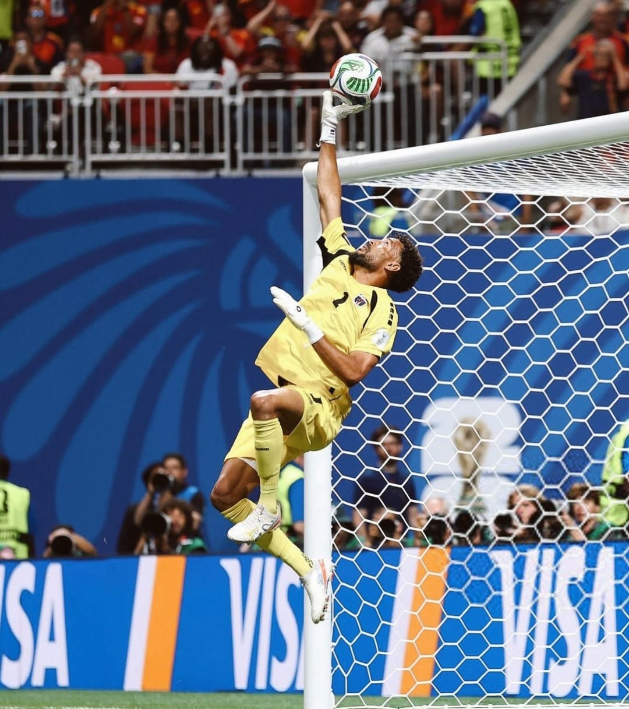

Vozinha: Goleiro "herói" da seleção de Cabo Verde

Vozinha: Goleiro "herói" da seleção de Cabo Verde
O empate sem gols entre Espanha e Cabo Verde ficou marcado não só por ser a primeira partida da seleção africana numa Copa do Mundo, mas também por revelar um grande goleiro: Vozinha
Aos seus 40 anos, o goleiro foi um dos protagonistas e responsáveis pelo resultado do jogo contra a atual campeã europeia, Espanha.
Ele fez história dentro e fora de campo. No jogo, uma partida histórica, defesas difíceis, e muita raça para defender seu país, ganhou o troféu de melhor em campo.
Fora dos gramados, o streamer e dono da CazéTV, uma das transmissoras oficiais da Copa do Mundo, Casimiro Miguel, virou fã do goleiro.
Nas redes sociais, Casimiro fez um "multirão" para o jogador. Ele iniciou o jogo com apenas 50 mil seguidores em seu Instagram, no final da partida já carregava mais de 1,6 milhões, e agora já chegou a marca de 12 milhões.
O goleiro de Cabo Verde, contou em uma entrevista que era muito fã do ex goleiro brasileiro Rogério Ceni, jogador que estava no banco de reservas no penta do Brasil em 2002 e ficou muito conhecido mundialmente por bater pênaltis e faltas.
Vozinha está livre no mercado, e após sua estreia heróica e histórica na Copa, pode ser alvo de muitos times por todo o mundo.
Feito por: @mahriios_